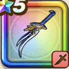

ミリオンダガー
攻略班 7.5点 / ヴァイパーファングまわしげりカオスエッジトライピアッサーインフィニティエッジ幸運の兆し
くわしい特徴
【レベル別習得スキル】 Lv1会心率+2% Lv1ヴァイパーファング（消費MP：5）刃に猛毒を宿し敵1体に威力130%の斬撃ダメージを与えたまに猛毒を与える Lv10まわしげり（消費MP：8）足で周囲をなぎはらい敵全体に威力110%の体技ダメージを与える Lv15カオスエッジ（消費MP：9）混沌の剣技で敵1体に威力175％の斬撃ダメージを与えたまに混乱させる Lv20トライピアッサー（消費MP：30）敵1体に威力170%の斬撃ダメージを3回与える(このスキルで会心の一撃が発生すると超会心の一撃になり効果が上がる) Lv30インフィニティエッジ（消費MP：35）敵全体に威力460%の斬撃ダメージを与える(このスキルで会心の一撃が発生すると超会心の一撃になり効果が上がる) Lv35ゾンビ系へのダメージ+5% Lv40鳥系へのダメージ+5% Lv45攻撃力+12 Lv50幸運の兆し（消費MP：7）戦闘開始時に幸運がおとずれて会心率やみかわし率などが少し上がる(効果3ターン) 【限界突破スキル】 1凸スキルの斬撃・体技ダメージ+5% 2凸スキルの斬撃・体技ダメージ+5% 3凸スキルの斬撃・体技ダメージ+5% 4凸スキルの斬撃・体技ダメージ+5%